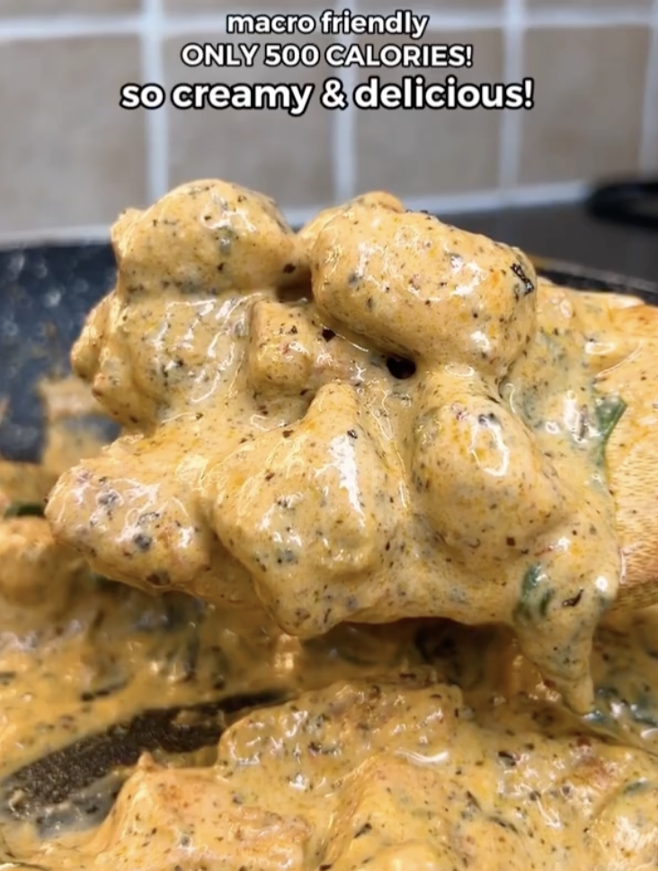

Low Calorie Creamy Chicken

Macros: 507 cal/serving | 62.5g protein | 48.5 carbs | 7g fat (including rice)
Healthy, low calorie, creamy chicken! Made by Jalal Sameja on Instagram.
Ingredients:
- 300g chicken breast cut into cubes (raw weight)
- 1 tsp olive oil
- 1 tsp garlic powder
- 1 tbsp paprika
- 1 tbsp dried basil
- 1/2 tsp red chili flakes
- 1 tsp salt
Mix it all together until the chicken goes red.
- 90g low fat cream cheese (use the lightest Philadelphia cream cheese if available).
- 120ml (1/2 cup) low fat milk
- 15g grated parmesan
- 1 tsp gralic powder
- 1 tsp basil
- 1/4 tsp chili flakes
Blend it all together until smooth.
Cooking process:
- Cooking spray or olive oil on a pan.
- Cook the chicken on medium heat for 3 mins. Flip and lower the heat completely.
- Add the sauce.
- Add a handful of spinach.
- Cover for 2 mins. Let it simmer for another 5-8 mins. until the sauce thickens.
- Serve with 140g of cooked rice or pasta.